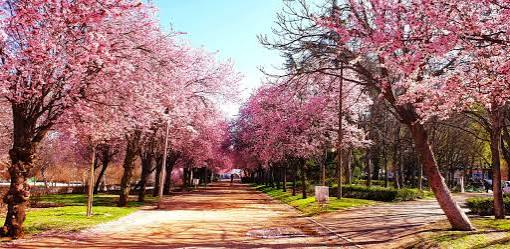

Sobre nosotros
- Centro público de la Comunidad de Madrid
- FP y Bachillerato
- Más de 50 años de trayectoria educativa

Madrid
El IES Tetuán de las Victorias es un centro público de Madrid con una larga trayectoria educativa. Ofrece una formación integral, moderna y adaptada a las necesidades del mundo actual, con un entorno cercano y un gran equipo docente.

C/ Vía Límite, 14,
28029 Madrid.
Orientación académica y profesional
Actividades extraescolares
Conexión wifi en todo el centro
Plataforma educativa
El instituto se encuentra en el barrio de Tetuán, una zona bien comunicada y con todos los servicios: transporte público, zonas verdes, centros deportivos, centros comerciales y un ambiente joven.